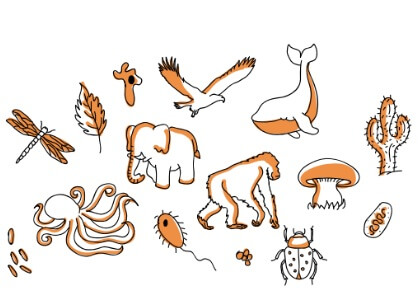

Biologia
Evolução Química (hipótese de Oparin e Haldane);
A Origem da Vida na Terra Tema controverso e discutido por muitos, ainda sem solução.
Com isso, estudiosos e pesquisadores se emprenharam nos estudos para explicar o surgimento dos seres vivos na Terra.
As principais hipóteses:
Teoria criacionista: Forma como as religiões enxergam o surgimento do mundo e dos seres que nele habitam. Criado por alguma ação ou ser divino.
Biogênese: um ser vivo só pode ser originado a partir de um ser vivo
preexistente.
Abiogênese: A Teoria da Abiogênese ou da Geração Espontânea admitia que os seres
vivos eram originados a partir de uma matéria bruta sem vida.
Panspermia: a vida na Terra foi trazida do espaço por meteoros e cometas.
Evolução química: compostos simples presentes na Terra primitiva passaram por
diversas reações e formaram compostos tão complexos ao ponto de conceber seres vivos. Essa é a hipótese
mais aceita atualmente.
A evolução química é a hipótese mais aceita para a origem da vida no planeta.
Segundo essa hipótese,
associações entre moléculas geraram agrupamentos cada vez mais complexos até que promoveu o surgimento
da vida.
Os autores acreditavam que as condições físicas e químicas da atmosfera primitiva tenham
contribuído com a formação das primeiras moléculas orgânicas, chamadas de
coacervados.
No interior
desses pequenos grupos de moléculas, os coacervados, ocorriam diversas reações químicas, que foram os
tornando mais complexos e estáveis.

Experimento de Miller
Para estudar o surgimento das primeiras moléculas orgânicas, o
químico Stanley Miller realizou um experimento que simullava as condições
da terra primitiva,
tais quais permitiram o surgimento das primeiras moléculas orgânicas.
O cientista utilizou
materiais
que continham elementos que compõem moléculas orgânicas, tais como: oxigênio (O),
carbono (C),
hidrogênio (H) e nitrogênio (N) .
O ambiente continha uma atmosfera
primitiva, ou seja, havia altas
temperaturas e muitas descargas elétricas.
Virus: Vivos ou Não?
Os vírus são organismos que intrigam os cientista devido as suas diversas
…
Reino Fungi: organismos eucariontes, unicelulares ou pluricelulares,
heterotróficos, sendo que sua nutrição ocorre por absorção. Exemplos: cogumelos e leveduras.
peculiaridades. Muitos consideram os vírus seres vivos, no entanto, se tratam de organimos sem vida.
Os vírus apresentam algumas características que indicam que se tratam de seres não vivos. Uma dessas
características é a ausência de células, uma característica presente em todos os
seres vivos, segundo a famosa Teoria Celular. Sem células, portanto, os vírus não são seres vivos.
Apesar de apresentar características que comprovavam que o vírus não é um ser vivo, existem características
que nos fazem pensar que eles são, sim, uma forma de vida. Uma delas é a presença
de um material genético que armazena todas as informações sobre aqueles seres.
Eles também têm a capacidade de evoluir, pois frequentemente ocorrem modificações em suas características.
Essas mudanças são observadas facilmente quando falamos do vírus da gripe, por exemplo.
Sendo assim, podemos concluir que os vírus apresentam características tanto de seres vivos
quanto de seres não vivos. É por isso que ainda não existe um consenso entre todos os
pesquisadores quanto à classificação desses organismos.
Taxonomia e a Classificação dos Seres Vivos;
A taxonomia é o ramo da biologia responsável por descrever, identificar e nomear
os seres vivos de acordo
com os critérios estabelecidos, como aspectos morfológicos, genéticos, fisiológicos e reprodutivos.
A
classificação biológica é um sistema utilizado para organizar os seres vivos por meio de critérios
preestabelecidos. A sistemática é uma área que também auxilia nesse processo, já que estuda as relações
evolutivas entre os organismos, sendo cada vez mais utilizada nesse processo, assim como a biologia
molecular.
O físico e botânico sueco Carolus Linnaeus (1707-1778), considerado o
pai da taxonomia moderna, desenvolveu o sistema de nomenclatura binomial, no qual
os organismos são designados de acordo com gênero e espécie.
Como mencionado, Linneu estabeleceu um
sistema hierárquico de táxons, também chamado de categorias hierárquicas, são elas:

Categorias taxonômicas
Biologia
… -
Reino Fungi: organismos eucariontes, unicelulares ou pluricelulares,
heterotróficos, sendo que sua nutrição ocorre por absorção. Exemplos: cogumelos e leveduras.
-
-
Reino: a maior das categorias, é constituída por um conjunto de filos;
-
Filo: constituído por um conjunto de classes;
-
Classe: constituída por um conjunto de ordens;
-
Ordem: constituída por um conjunto de famílias;
-
Família: constituída por um conjunto de gêneros;
-
Genêro: constituído por um conjunto de espécies;
-
Espécie: grupo de organismos capazes de reproduzir-se e originar
descendentes férteis.
Classificação em seis reinos
A classificação em seis reinos foi proposta por Woese e
diferencia-se da classificação de Whittaker pela extinção do Reino Monera e a criação do Reino Bacteria e do
Reino Archea.
Reino Archea: organismos procariontes, autotróficos ou heterotróficos, e que
habitam ambientes extremos, por exemplo, apresentando altas temperaturas e concentração de metano ou
enxofre. Esses organismos assemelham-se, em termos evolutivos, mais aos eucariontes do que às bactérias.
Reino Bacteria: organismos procariontes unicelulares. Exemplos: bactérias e
cianobactérias.
Reino Protista: organismos eucariontes, unicelulares, autotróficos ou
heterotróficos. Exemplos: protozoários e algas.
Reino Fungi: organismos eucariontes, unicelulares ou pluricelulares,
heterotróficos, sendo que sua nutrição ocorre por absorção. Exemplos: cogumelos e leveduras.
Reino Plantae: organismos eucariontes, multicelulares e autotróficos
(fotossintetizantes). Exemplos: algas multicelulares e vegetais inferiores e superiores.
Reino Animalia: organismos eucariontes, multicelulares e heterotróficos.
Exemplos: animais invertebrados e animais vertebrados.
Segundo as classificações mais recentes, o Reino Monera e o Reino Protista deixam
de existir, sendo apenas utilizados como coletivo para organismos procariontes e eucariontes
unicelulares, respectivamente.
Classificação em três domínios
A classificação em três domínios foi também proposta por Woese e é a mais aceita
na atualidade.
Domínio Bacteria: constituído por organismos unicelulares procariontes, tendo como
representantes as bactérias.
Domínio Archea: constituído por organismos unicelulares procariontes, também
conhecidos como arqueobactérias, encontrados em ambientes considerados extremos, apresentando, por
exemplo, temperaturas muito elevadas e altas concentrações de metano ou enxofre.
Domínio Eukarya: constituído por todos os organismos eucariontes.